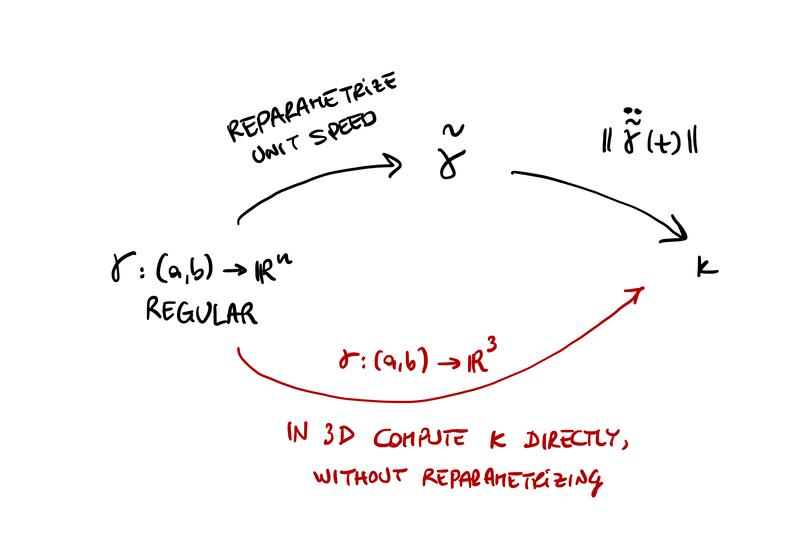
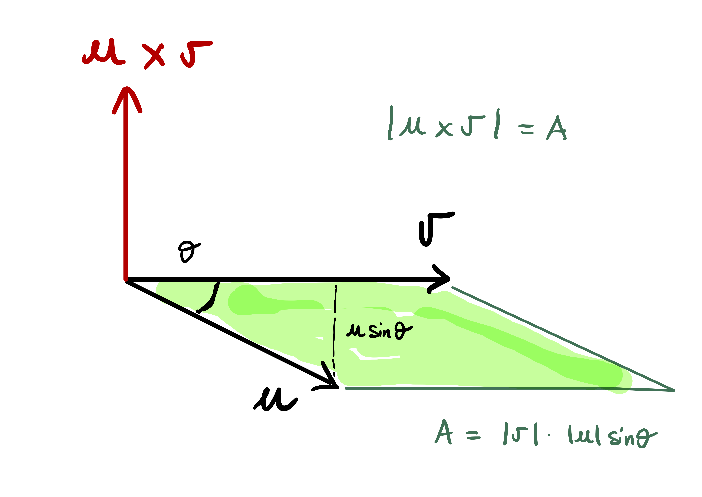
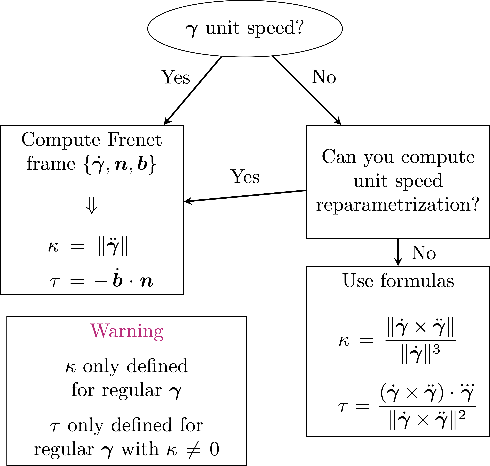

3 Curvature and Torsion
We have seen how to describe curves and reparametrized them. Now we want to look at local properties of curves:
- How much does a curve twist?
- How much does a curve bend?
We will measure two quantities:
- Curvature: measures how much a curve \({\boldsymbol \gamma}\) deviates from a straight line.
- Torsion: measures how much a curve \({\boldsymbol \gamma}\) fails to lie on a plane.
For example a 2D spiral is curved, but still lies in a plane. Instead the Helix both deviates from a straight line and pulls away from any fixed plane.
3.1 Curvature
We start with an informal discussion. Suppose \({\boldsymbol \gamma}\) is a straight line \[ {\boldsymbol \gamma}(t) = \mathbf{a} + t \mathbf{v} \] with \(\mathbf{a}, \mathbf{v} \in \mathbb{R}^3\). The tangent vector to \({\boldsymbol \gamma}\) is constant \[ \dot{\boldsymbol \gamma}(t) = \mathbf{v} \,. \] Whatever the definition of curvature will be, it has to hold that \({\boldsymbol \gamma}\) has zero curvature in this case. If we further derive the tangent vector, we obtain \[ \ddot{\boldsymbol \gamma}(t) = {\boldsymbol 0}\,. \] Thus \(\ddot {\boldsymbol \gamma}\) seems to be a good candidate for the definition of curvature of \({\boldsymbol \gamma}\) at the point \({\boldsymbol \gamma}(t)\).
Suppose now that \({\boldsymbol \gamma}\) is a curve in \(\mathbb{R}^2\) with unit speed. We have proven that in this case \[ \dot {\boldsymbol \gamma}\cdot \ddot{\boldsymbol \gamma}= 0 \,, \] that is, the vector \(\ddot {\boldsymbol \gamma}\) is orthogonal to the tangent \(\dot {\boldsymbol \gamma}\) at all times. Now let \(\mathbf{n}(t)\) be the unit vector orthogonal to \(\dot {\boldsymbol \gamma}(t)\) at the point \({\boldsymbol \gamma}(t)\). The amount that the curve \({\boldsymbol \gamma}\) deviates from its tangent at \({\boldsymbol \gamma}(t)\) after time \(t_0\) is \[ ( {\boldsymbol \gamma}(t + t_0) - {\boldsymbol \gamma}(t) ) \cdot \mathbf{n}(t) \,, \tag{3.1}\] as seen in the figure below.

Equation (3.1) is what we take as measure of curvature. Since \[ \dot {\boldsymbol \gamma}(t) \cdot \ddot {\boldsymbol \gamma}(t) = 0 \quad \mbox{ and } \quad \dot {\boldsymbol \gamma}(t) \cdot \mathbf{n}(t)= 0 \,, \] we conclude that \(\ddot {\boldsymbol \gamma}(t)\) is parallel to \(\mathbf{n}(t)\). Since \(\mathbf{n}(t)\) is a unit vector, there exists a scalar \(\kappa(t)\) such that \[ \ddot {\boldsymbol \gamma}(t) = \kappa(t) \, \mathbf{n}(t) \,. \] Note that, since \(\mathbf{n}\) is unitary, we have \[ \kappa(t) = \left\| \ddot {\boldsymbol \gamma}(t) \right\| \]
Now, approximate \({\boldsymbol \gamma}\) at \(t\) with its second order Taylor polynomial: \[ {\boldsymbol \gamma}(t+t_0) = {\boldsymbol \gamma}(t) + \dot{\boldsymbol \gamma}(t) t_0 + \frac{\ddot{\boldsymbol \gamma}(t)}{2} t_0^2 + o(t_0) \] with the remainder \(o(t_0)\) is such that \[ \lim_{t_0 \to 0} \ \frac{o(t_0)}{t_0^2} = 0 \,. \] Therefore, forgetting about the remainder, \[ {\boldsymbol \gamma}(t+t_0) - {\boldsymbol \gamma}(t) \approx \dot{\boldsymbol \gamma}(t) t_0 + \frac{\ddot{\boldsymbol \gamma}(t)}{2} t_0^2 \,. \] Multiplying by \(\mathbf{n}(t)\) we get \[ ({\boldsymbol \gamma}(t+t_0) - {\boldsymbol \gamma}(t)) \cdot \mathbf{n}(t) \approx \dot{\boldsymbol \gamma}(t) \cdot \mathbf{n}(t) t_0 + \frac{\ddot{\boldsymbol \gamma}(t) \cdot \mathbf{n}(t) }{2} t_0^2\,. \] Recalling that \[ \dot{\boldsymbol \gamma}(t) \cdot \mathbf{n}(t) = 0\,, \quad \ddot{\boldsymbol \gamma}(t) \cdot \mathbf{n}(t) = \kappa(t) \,, \] we then obtain \[ ({\boldsymbol \gamma}(t+t_0) - {\boldsymbol \gamma}(t)) \cdot \mathbf{n}(t) \approx \frac{1}{2} \, \kappa(t) \, t_0^2 \]
Important
The amount that \({\boldsymbol \gamma}\) deviates from a straight line is proportional to \[
\kappa(t) = \left\| \ddot {\boldsymbol \gamma}(t) \right\|\,.
\]
We take this as definition of curvature for a general unit speed curve in \(\mathbb{R}^n.\)
Definition 1
Let \({\boldsymbol \gamma}\ \colon (a,b) \to \mathbb{R}^n\) be a unit speed curve. The curvature of \({\boldsymbol \gamma}\) at \({\boldsymbol \gamma}(t)\) is \[
\kappa^{\boldsymbol \gamma}(t) := \left\| \ddot {\boldsymbol \gamma}(t) \right\| \,.
\]
Note that \(\kappa(t)\) is a function of time. Therefore the curvature of \({\boldsymbol \gamma}\) can change from point to point.
We now define curvature for curves which are regular, but not necessarily unit speed.
Definition 2
Let \({\boldsymbol \gamma}\ \colon (a,b) \to \mathbb{R}^n\) be a regular. The curvature of \({\boldsymbol \gamma}\) at \({\boldsymbol \gamma}(t)\) is \[
\kappa^{\boldsymbol \gamma}(t) := \left\| \ddot{\widetilde{{\boldsymbol \gamma}}} (\phi(t)) \right\| \,, \quad \forall \, t \in (a,b)\,,
\] where \(\widetilde{{\boldsymbol \gamma}}\) is a unit speed reparametrization of \({\boldsymbol \gamma}\), with \({\boldsymbol \gamma}= \widetilde{{\boldsymbol \gamma}}\circ \phi\).
Remark 3
The above definition is well posed:
- Since \({\boldsymbol \gamma}\) is regular, there exist a unit speed reparametrization \(\widetilde{{\boldsymbol \gamma}}\) of \({\boldsymbol \gamma}\).
- If \(\hat{{\boldsymbol \gamma}}\) is another unit speed reaprametrization of \({\boldsymbol \gamma}\), with \({\boldsymbol \gamma}= \hat{{\boldsymbol \gamma}} \circ \hat\phi\), then \[ \kappa^{{\boldsymbol \gamma}} (t) = \left\| \ddot{\hat{\boldsymbol \gamma}} (\hat\phi(t)) \right\| \,, \] showing that there is no ambiguity in the definition of \(\kappa^{\boldsymbol \gamma}\).
Indeed, since \(\widetilde{{\boldsymbol \gamma}}\) and \(\hat{{\boldsymbol \gamma}}\) are both reparametrizations of \({\boldsymbol \gamma}\), then \[ {\boldsymbol \gamma}(t) = \widetilde{{\boldsymbol \gamma}}( \tilde{\phi}(t)) \,, \quad {\boldsymbol \gamma}(t) = \hat{{\boldsymbol \gamma}} (\hat{\phi}(t) ) \] for some diffeomorphisms \(\tilde{\phi}, \hat{\phi}\). Hence \[ {\widetilde{{\boldsymbol \gamma}}}(t) = \hat{\boldsymbol \gamma}(\phi(t))\,, \quad \phi:= \hat{\phi} \circ (\tilde{\phi})^{-1} \,, \tag{3.2}\] where \(\phi\) is a diffeomorphism, since it is composition of diffeomorphisms. Differentiating (3.2) we get \[ \dot{\widetilde{{\boldsymbol \gamma}}}(t) = \dot{\hat{{\boldsymbol \gamma}}}(\phi(t)) \dot\phi(t) \,. \tag{3.3}\] Taking the norms of the above, and recalling that \(\widetilde{{\boldsymbol \gamma}}\) and \(\hat{\boldsymbol \gamma}\) are unit speed, we get \[ |\dot\phi(t)| = 1 \,, \quad \forall \, t \,. \tag{3.4}\] Since \(\phi\) is a diffeomorphism, we already know that \(|\dot\phi| \neq 0\). As \(\dot\phi\) is continuous, this means that the sign of \(\dot\phi\) is constant. Thus (3.4) implies \[ \dot\phi(t) \equiv 1 \quad \mbox{or} \quad \dot\phi(t) \equiv -1 \,. \] In both cases, we have \[ \ddot \phi\equiv 0 \,. \] Differentiating (3.3) we then obtain \[\begin{align} \ddot{\widetilde{{\boldsymbol \gamma}}}(t) & = \ddot{\hat{{\boldsymbol \gamma}}}(\phi(t)) \dot\phi^2(t) + \dot{\hat{{\boldsymbol \gamma}}}(\phi(t)) \ddot\phi(t) \\ & = \ddot{\hat{{\boldsymbol \gamma}}}(\phi(t)) \dot\phi^2(t) \,. \end{align}\] Taking the norms and using again that \(|\dot\phi| \equiv 1\), we get that \[ \left\| \ddot{\widetilde{{\boldsymbol \gamma}}}(t) \right\| = \left\| \ddot{\hat{{\boldsymbol \gamma}}}(\phi(t)) \right\| \,. \] Recalling that \(\phi = \hat\phi\circ (\tilde{\phi})^{-1}\) we get \[ \left\| \ddot{\widetilde{{\boldsymbol \gamma}}}( \tilde{\phi}(t)) \right\| = \left\| \ddot{\hat{{\boldsymbol \gamma}}}(\hat\phi(t)) \right\| \,, \quad \forall \, t \in (a,b) \,. \] Therefore \[ \kappa^{\boldsymbol \gamma}(t) = \left\| \ddot{\widetilde{{\boldsymbol \gamma}}}( \tilde{\phi}(t)) \right\| = \left\| \ddot{\hat{{\boldsymbol \gamma}}}(\hat\phi(t)) \right\| \,. \]
Remark 4: Methods for computing curvature
In summary, the curvature of a regular curve \[
{\boldsymbol \gamma}\ \colon (a,b) \to \mathbb{R}^n
\] is defined via unit speed reparametrizations of \({\boldsymbol \gamma}\). To compute \(\kappa\) we do the following:
- We find a unit speed reparametrization \(\widetilde{{\boldsymbol \gamma}}\) of the regular curve \({\boldsymbol \gamma}\)
- This can be done by computing \(s\) the arc-length of \({\boldsymbol \gamma}\), and then defining \[ \widetilde{{\boldsymbol \gamma}}:= {\boldsymbol \gamma}\circ \psi \,, \quad \psi:=s^{-1} \]
- Then we compute \[ \kappa^{\widetilde{{\boldsymbol \gamma}}}(t) = \left\| \ddot{\widetilde{{\boldsymbol \gamma}}} \right\|(t) \]
- We obtain the curvature of \({\boldsymbol \gamma}\) by \[ \kappa^{\boldsymbol \gamma}(t)= \kappa^{\widetilde{{\boldsymbol \gamma}}} (t) \]
When \({\boldsymbol \gamma}\) is regular and has values in \(\mathbb{R}^3\), there is a way to compute \(\kappa\) without reparametrizing. To do this, we will need the notion of cross product, or vector product. We will see this in the following sections.

We conclude with an example where we compute \(\kappa\) using reparametrizations.
Example 5
Consider the circle of radius \(R>0\): \[
{\boldsymbol \gamma}(t) = (R\cos(t),R\sin(t)) \,, \quad t \in [0,2\pi] \,.
\] To compute the curvature of \({\boldsymbol \gamma}\) we need to find a unit speed reparametrization. We have shown that: \[
{\boldsymbol \gamma}\, \mbox{ regular } \,\,\, \implies \,\,\, \phi= s^{-1} \, \mbox{ unit speed reparametrization}
\] where \(s\) is the arc length of \({\boldsymbol \gamma}\): \[
s(t):= \int_{t_0}^t \left\| \dot {\boldsymbol \gamma}(\tau) \right\| \, d\tau \,.
\] In our case \[
\dot {\boldsymbol \gamma}(t) = (-R\sin(t), R\cos(t)) \quad \implies \quad
\left\| \dot {\boldsymbol \gamma}(t) \right\| = R
\] and so \({\boldsymbol \gamma}\) is regular. The arc length starting at \(t_0 = 0\) is \[
s(t) = \int_{0}^t R d \tau = t R \,.
\] The inverse of \(s\) is \[
\phi(t) := s^{-1} (t) = \frac{t}{R} \,.
\] Therefore a unit speed reparametrization of \({\boldsymbol \gamma}\) is \[
\widetilde{{\boldsymbol \gamma}}:={\boldsymbol \gamma}\circ \phi
\] which reads \[
\widetilde{{\boldsymbol \gamma}}(t) := \left( R \cos \left( \frac{t}{R} \right) , R \sin \left( \frac{t}{R} \right)\right) \,.
\] We have \[\begin{align}
\dot{\widetilde{{\boldsymbol \gamma}}} (t) & = \left( - \sin \left( \frac{t}{R} \right) , \cos \left( \frac{t}{R} \right)\right) \\
\ddot{\widetilde{{\boldsymbol \gamma}}} (t) & = \left( -\frac{1}{R} \cos \left( \frac{t}{R} \right) , - \frac{1}{R} \sin \left( \frac{t}{R} \right)\right)
\end{align}\] Therefore the curvature of \({\boldsymbol \gamma}\) is \[
\kappa(t) = \left\| \ddot{\widetilde{{\boldsymbol \gamma}}} (t) \right\| = \frac{1}{R} \,.
\] In this case \(\kappa(t)\) is constant. The curvature also tells us that the smaller the circle, the higher the curvature. For a large circle, like the Earth, the curvature is barely noticeable.
3.2 Vector product in \(\mathbb{R}^3\)
The discussion in this section follows (Carmo 2017). We start by defining orientation for a vector space.
Definition 6: Same orientation
Consider two ordered basis of \(\mathbb{R}^3\) \[
B = (\mathbf{b}_1,\mathbf{b}_2,\mathbf{b}_3) \,, \quad \tilde{B} = (\widetilde{\mathbf{b}}_1,\widetilde{\mathbf{b}}_2,\widetilde{\mathbf{b}}_3) \,.
\] We say that \(B\) and \(\widetilde{B}\) have the same orientation if the matrix of change of basis has positive determinant.
When two basis \(B\) and \(\widetilde{B}\) have the same orientation, we write \[ \mathbf{b}\sim \widetilde{\mathbf{b}} \,. \] The above is clearly an equivalence relation on the set of ordered basis. Therefore the set of ordered basis of \(\mathbb{R}^3\) can be decomposed into equivalence classes. Since the determinant of the matrix of change of basis can only be positive or negative, there are only two equivalence classes.
Definition 7: Orientation
The two equivalence classes determined by \(\sim\) on the set of ordered basis are called orientations.
Definition 8: Positive orientation
Consider the standard basis of \(\mathbb{R}^3\) \[ E = (\mathbf{e}_1,\mathbf{e}_2,\mathbf{e}_3) \] where we set \[ \mathbf{e}_1 = (1,0,0)\,, \quad \mathbf{e}_2 = (0,1,0) \,, \quad \mathbf{e}_3 = (0,0,1) \,. \] Then:
- The orientation corresponding to \(E\) is called positive orientation of \(\mathbb{R}^3\).
- The orientation corresponding to the other equivalence class is called negative orientation of \(\mathbb{R}^3\).
For a basis \(B\) of \(\mathbb{R}^3\) we say that:
- \(B\) is a positive basis if it belongs to the class of \(e\).
- \(B\) is a negative basis if it does not belong to the class of \(e\).
Example 9
Since we are dealing with ordered basis, the order in which vectors appear is fundamental. For example, we defined the equivalence class of \[
E = (\mathbf{e}_1,\mathbf{e}_2,\mathbf{e}_3) \,,
\] to be the positive orientation of \(\mathbb{R}^3\). In particular \(e\) is a positive basis.
Consider instead \[ \widetilde{E} = (\mathbf{e}_2,\mathbf{e}_1,\mathbf{e}_3) \,. \] The matrix of change of variables between \(\widetilde{E}\) and \(E\) is \[ (\mathbf{e}_2 | \mathbf{e}_1 | \mathbf{e}_3 ) = \left( \begin{array}{ccc} 0 & 1 & 0 \\ 1 & 0 & 0 \\ 0 & 0 & 1 \\ \end{array} \right) \] and the latter has negative determinant. Thus \(\widetilde{E}\) does not belong to the class of \(E\), and is therefore a negative basis.
Consider instead \[ \widetilde{E} = (\mathbf{e}_2,\mathbf{e}_1,\mathbf{e}_3) \,. \] The matrix of change of variables between \(\widetilde{E}\) and \(E\) is \[ (\mathbf{e}_2 | \mathbf{e}_1 | \mathbf{e}_3 ) = \left( \begin{array}{ccc} 0 & 1 & 0 \\ 1 & 0 & 0 \\ 0 & 0 & 1 \\ \end{array} \right) \] and the latter has negative determinant. Thus \(\widetilde{E}\) does not belong to the class of \(E\), and is therefore a negative basis.
We are now ready to define the vector product in \(\mathbb{R}^3\).
Definition 10: Vector product in \(\mathbb{R}^3\)
Let \(\mathbf{u},\mathbf{v}\in \mathbb{R}^3\). The vector product of \(\mathbf{u}\) and \(\mathbf{v}\) is the unique vector \[
\mathbf{u}\times \mathbf{v}\in \mathbb{R}^3
\] which satisfies the property: \[
(\mathbf{u}\times \mathbf{v}) \cdot \mathbf{w}=
\left|
\begin{array}{ccc}
u_1 & u_2 & u_3 \\
v_1 & v_2 & v_3 \\
w_1 & w_2 & w_3 \\
\end{array}
\right| \,, \quad \forall \, \mathbf{w}\in \mathbb{R}^3 \,.
\tag{3.5}\] Here \(|a_{ij}|\) denotes the determinant of the matrix \((a_{ij})\), and \[
\mathbf{u}= \sum_{i=1}^3 u_i \mathbf{e}_i \,, \quad
\mathbf{v}= \sum_{i=1}^3 v_i \mathbf{e}_i \,, \quad
\mathbf{w}= \sum_{i=1}^3 w_i \mathbf{e}_i \,,
\] with \((\mathbf{e}_1,\mathbf{e}_2,\mathbf{e}_3)\) standard basis of \(\mathbb{R}^3\).
The following proposition gives an explicit formula for computing \(\mathbf{u}\times \mathbf{v}\).
Proposition 11
Let \(\mathbf{u},\mathbf{v}\in \mathbb{R}^3\). Then \[
\mathbf{u}\times \mathbf{v}=
\left|
\begin{array}{cc}
u_2 & u_3 \\
v_2 & v_3
\end{array}
\right| \mathbf{e}_1 -
\left|
\begin{array}{cc}
u_1 & u_3 \\
v_1 & v_3
\end{array}
\right| \mathbf{e}_2 +
\left|
\begin{array}{cc}
u_1 & u_2 \\
v_1 & v_2
\end{array}
\right| \mathbf{e}_3 \,.
\tag{3.6}\]
Proof
Denote by \((\mathbf{u}\times \mathbf{v})_i\) the \(i\)-th component of \(\mathbf{u}\times \mathbf{v}\) with respect to the standard basis, that is, \[
\mathbf{u}\times \mathbf{v}= \sum_{i=1}^3 (\mathbf{u}\times \mathbf{v})_i \, \mathbf{e}_i \,.
\] We can use (3.5) with \(\mathbf{w}= \mathbf{e}_1\) to obtain \[
(\mathbf{u}\times \mathbf{v}) \cdot \mathbf{e}_1 =
\left|
\begin{array}{ccc}
u_1 & u_2 & u_3 \\
v_1 & v_2 & v_3 \\
1 & 0 & 0 \\
\end{array}
\right| =
\left|
\begin{array}{cc}
u_2 & u_3 \\
v_2 & v_3
\end{array}
\right|
\] where we used the Laplace expansion for computing the determinant of the \(3 \times 3\) matrix. As the standard basis is orthonormal, by bilinearity of the scalar product we get \[
(\mathbf{u}\times \mathbf{v}) \cdot \mathbf{e}_1 = \sum_{i=1}^3 (\mathbf{u}\times \mathbf{v})_i \, \mathbf{e}_i \cdot \mathbf{e}_1 = (\mathbf{u}\times \mathbf{v})_i \,.
\] Therefore we have shown \[
(\mathbf{u}\times \mathbf{v})_1 = \left|
\begin{array}{cc}
u_2 & u_3 \\
v_2 & v_3
\end{array}
\right| \,.
\] Similarly we obtain \[
(\mathbf{u}\times \mathbf{v})_2 = \left|
\begin{array}{ccc}
u_1 & u_2 & u_3 \\
v_1 & v_2 & v_3 \\
0 & 1 & 0 \\
\end{array}
\right| = -
\left|
\begin{array}{cc}
u_1 & u_3 \\
v_1 & v_3
\end{array}
\right|
\] and \[
(\mathbf{u}\times \mathbf{v})_3 = \left|
\begin{array}{ccc}
u_1 & u_2 & u_3 \\
v_1 & v_2 & v_3 \\
0 & 0 & 1 \\
\end{array}
\right| =
\left|
\begin{array}{cc}
u_1 & u_2 \\
v_1 & v_2
\end{array}
\right| \,,
\] from which we conclude.
Proposition 12
The vector product in \(\mathbb{R}^3\) satisfies the following properties: For all \(\mathbf{u}, \mathbf{v}\in \mathbb{R}^3\)
- \(\mathbf{u}\times \mathbf{v}= - \mathbf{v}\times \mathbf{u}\)
- \(\mathbf{u}\times \mathbf{v}= {\boldsymbol 0}\) if and only if \(\mathbf{u}\) and \(\mathbf{v}\) are linearly dependent
- \((\mathbf{u}\times \mathbf{v}) \cdot \mathbf{u}= 0\), \((\mathbf{u}\times \mathbf{v}) \cdot \mathbf{v}= 0\)
- For all \(\mathbf{w}\in \mathbb{R}^3\), \(a,b \in \mathbb{R}\) \[ (a\mathbf{u}+ b\mathbf{w}) \times \mathbf{v}= a \mathbf{u}\times \mathbf{v}+ b\mathbf{w}\times \mathbf{w} \]
The proof, which is based on the properties of determinants, is omitted.
Remark 13: Geometric interpretation of vector product
Let \(\mathbf{u}, \mathbf{v}\in \mathbb{R}^3\) be linearly independent. We make some observations:
Property 3 in Proposition 12 says that \[ (\mathbf{u}\times \mathbf{v}) \cdot \mathbf{u}= 0 \,, \quad (\mathbf{u}\times \mathbf{v}) \cdot \mathbf{v}= 0 \,. \] Therefore \(\mathbf{u}\times \mathbf{v}\) is orthogonal to both \(\mathbf{u}\) and \(\mathbf{v}\).
In particular \(\mathbf{u}\times \mathbf{v}\) is orthogonal to the plane generated by \(\mathbf{u}\) and \(\mathbf{v}\).
Since \(\mathbf{u}\) and \(\mathbf{v}\) are linearly independent, Property 2 in Proposition 12 says that \[ \mathbf{u}\times \mathbf{v}\neq {\boldsymbol 0} \]
Therefore we have \[ (\mathbf{u}\times \mathbf{v}) \cdot (\mathbf{u}\times \mathbf{v}) = \left\| \mathbf{u}\times \mathbf{v} \right\|^2 > 0 \]
On the other hand, using the definition of \(\mathbf{u}\times \mathbf{v}\) with \(\mathbf{w}= \mathbf{v}\times \mathbf{w}\) yields \[ (\mathbf{u}\times \mathbf{v}) \cdot (\mathbf{u}\times \mathbf{v}) = \left| \begin{array}{ccc} u_1 & u_2 & u_3 \\ v_1 & v_2 & v_3 \\ (\mathbf{u}\times \mathbf{v})_1 & (\mathbf{u}\times \mathbf{v})_2 & (\mathbf{u}\times \mathbf{v})_3 \\ \end{array} \right| \]
Therefore the determinant of the matrix \[ (\mathbf{u}| \mathbf{v}| \mathbf{u}\times \mathbf{v}) \] is positive. This shows that \[ (\mathbf{u}, \mathbf{v}, \mathbf{u}\times \mathbf{v}) \] is a positive basis of \(\mathbb{R}^3\).
For all \(\mathbf{u},\mathbf{v},\mathbf{x},\mathbf{y}\in \mathbb{R}^3\) it holds \[ (\mathbf{u}\times \mathbf{v}) \cdot (\mathbf{x}\times \mathbf{y}) = \left| \begin{array}{cc} \mathbf{u}\cdot \mathbf{x}& \mathbf{v}\cdot \mathbf{x}\\ \mathbf{u}\cdot \mathbf{y}& \mathbf{v}\cdot \mathbf{y} \end{array} \right| \,. \tag{3.7}\] Indeed, one can check that the above formula holds for the standard vectors \(\mathbf{e}_i\), and thus the general formula follows by linearity.
Using (3.7) we get \[\begin{align} \left\| \mathbf{u}\times \mathbf{v} \right\|^2 & = (\mathbf{u}\times \mathbf{v}) \cdot (\mathbf{u}\times \mathbf{v}) = \left| \begin{array}{cc} \mathbf{u}\cdot \mathbf{u}& \mathbf{v}\cdot \mathbf{u}\\ \mathbf{u}\cdot \mathbf{v}& \mathbf{v}\cdot \mathbf{v} \end{array} \right| \\ & = \left\| \mathbf{u} \right\|^2 \left\| \mathbf{v} \right\|^2 - |\mathbf{u}\cdot \mathbf{v}|^2 \\ & = \left\| \mathbf{u} \right\|^2 \left\| \mathbf{v} \right\|^2 - \left\| \mathbf{u} \right\|^2 \left\| \mathbf{v} \right\|^2 \cos^2(\theta) \\ & = \left\| \mathbf{u} \right\|^2\left\| \mathbf{v} \right\|^2 (1-\cos^2(\theta)) \\ & = \left\| \mathbf{u} \right\|^2\left\| \mathbf{v} \right\|^2 \sin^2(\theta) \\ & = A^2 \end{align}\] where \(A\) is the area of the parallelogram with sides \(\mathbf{u}\) and \(\mathbf{v}\).

Let us summarize the above remark.
Remark 14: Summary: Properties of \(\mathbf{u}\times \mathbf{v}\)
Let \(\mathbf{u},\mathbf{v}\in \mathbb{R}^3\) be linearly independent. Then
- \(\mathbf{u}\times \mathbf{v}\) is orthogonal to the plane spanned by \(\mathbf{u},\mathbf{v}\)
- \(\left\| \mathbf{u}\times \mathbf{v} \right\|\) is equal to the area of the parallelogram with sides \(\mathbf{u},\mathbf{v}\)
- \(\mathbf{u}\times \mathbf{v}\) is such that \[ (\mathbf{u},\mathbf{v},\mathbf{u}\times \mathbf{v}) \] is a positive basis of \(\mathbb{R}^3\).
We conclude with noting that the cross product is not associative, and with a useful proposition for differentiating the cross product of curves in \(\mathbb{R}^3\).
Proposition 15
The vector product is not associative. In particular, for all \(\mathbf{u}, \mathbf{v}, \mathbf{w}\in \mathbb{R}^3\) it holds: \[
(\mathbf{u}\times \mathbf{v}) \times \mathbf{w}= ( \mathbf{u}\cdot \mathbf{w}) \mathbf{v}- ( \mathbf{v}\cdot \mathbf{w}) \mathbf{u}\,.
\tag{3.8}\]
The proof is omitted. It follows by observing that both sides of (3.8) are linear in \(\mathbf{u}, \mathbf{v}, \mathbf{w}\). Therefore it is sufficient to verify (3.8) for the standard basis vectors \(\mathbf{e}_i\). This is left as an exercise.
Proposition 16
Suppose \({\boldsymbol \gamma},{\boldsymbol \eta}\ \colon (a,b) \to \mathbb{R}^3\) are parametrized curves. Then the curve \[
{\boldsymbol \gamma}\times {\boldsymbol \eta}\ \colon (a,b) \to \mathbb{R}^3
\] is smooth, and \[
\frac{d}{dt} ( {\boldsymbol \gamma}\times {\boldsymbol \eta}) = \dot {\boldsymbol \gamma}\times {\boldsymbol \eta}+ {\boldsymbol \gamma}\times \dot {\boldsymbol \eta}\,.
\tag{3.9}\]
The proof is omitted. It follows immediately from formula (3.6).
3.3 Curvature formula in \(\mathbb{R}^3\)
Given a unit speed curve \[ {\boldsymbol \gamma}\ \colon (a,b) \to \mathbb{R}^n \] we defined its curvature as \[ \kappa(t) = \left\| \ddot{{\boldsymbol \gamma}}(t) \right\| \,. \] If \({\boldsymbol \gamma}\) is not unit speed then the curvature is not defined. However, when \({\boldsymbol \gamma}\) is regular, then we can find a unit-speed reparametrization \(\widetilde{{\boldsymbol \gamma}}\) of \({\boldsymbol \gamma}\), and compute \(\kappa\) as \[ \kappa(t) = \left\| \ddot{\widetilde{{\boldsymbol \gamma}}}(t) \right\| \,. \] If \({\boldsymbol \gamma}\) is a regular curve in \(\mathbb{R}^3\), there is a way to compute \(\kappa\) without passing through \(\widetilde{{\boldsymbol \gamma}}\). The formula for computing \(\kappa\) is as follows.
Proposition 17
Let \({\boldsymbol \gamma}\colon (a,b) \to \mathbb{R}^3\) be a regular curve. Then the curvature \(\kappa(t)\) of \({\boldsymbol \gamma}\) at \({\boldsymbol \gamma}(t)\) is given by \[
\kappa(t) = \frac{ \left\| \dot {\boldsymbol \gamma}\times \ddot {\boldsymbol \gamma} \right\| }{ \left\| \dot {\boldsymbol \gamma} \right\|^3 } \,.
\tag{3.10}\]
We delay the proof of the above Proposition, as this will get easier when the Frenet frame is introduced. For a proof which does not make use of the Frenet frame, see the proof of Proposition 2.1.2 in (Pressley 2010).
For now we use (3.10) the above proposition to compute the curvature on specific curves.
Example 18
Consider the straight line \[
{\boldsymbol \gamma}(t) = \mathbf{a} + t \mathbf{v}
\] for some \(\mathbf{a}, \mathbf{v} \in \mathbb{R}^3\) fixed, with \(\mathbf{v} \neq {\boldsymbol 0}\). Then \[
\dot {\boldsymbol \gamma}(t) = \mathbf{v} \,, \quad \ddot {\boldsymbol \gamma}(t) = {\boldsymbol 0}\,.
\] Therefore \[
\left\| \dot {\boldsymbol \gamma}(t) \right\| = \left\| \mathbf{v} \right\| \neq 0
\] showing that \({\boldsymbol \gamma}\) is regular. We have \[
\dot {\boldsymbol \gamma}\times \ddot {\boldsymbol \gamma}= \mathbf{v} \times {\boldsymbol 0}= {\boldsymbol 0}\,.
\] Therefore the curvature is \[
\kappa = \frac{ \left\| \dot {\boldsymbol \gamma}\times \ddot {\boldsymbol \gamma} \right\| }{ \left\| \dot{\boldsymbol \gamma} \right\|^3 } = 0 \,,
\] as expected.
Example 19
Consider the Helix of radius \(R>0\) and rise \(H>0\) \[ {\boldsymbol \gamma}(t) = ( R\cos(t) , R\sin(t) , Ht) \,, \quad t \in \mathbb{R}\,. \] Then \[\begin{align} \dot{\boldsymbol \gamma}(t) & = ( -R\sin(t) , R\cos(t) , H) \\ \ddot{\boldsymbol \gamma}(t) & = ( -R\cos(t) , -R\sin(t) , 0) \end{align}\] From this we deduce that \[ \left\| \dot{\boldsymbol \gamma}(t) \right\| = \sqrt{R^2 + H^2}\,, \] showing that \({\boldsymbol \gamma}\) is regular. Finally \[\begin{align} \dot {\boldsymbol \gamma}\times \ddot {\boldsymbol \gamma}& = \left| \begin{array}{cc} {\dot{\boldsymbol \gamma}}_2 & {\dot{\boldsymbol \gamma}}_3 \\ {\ddot{\boldsymbol \gamma}}_2 & {\ddot{\boldsymbol \gamma}}_3 \end{array} \right| \mathbf{e}_1 - \left| \begin{array}{cc} {\dot{\boldsymbol \gamma}}_1 & {\dot{\boldsymbol \gamma}}_3 \\ {\ddot{\boldsymbol \gamma}}_1 & {\ddot{\boldsymbol \gamma}}_3 \end{array} \right| \mathbf{e}_2 + \left| \begin{array}{cc} {\dot{\boldsymbol \gamma}}_1 & {\dot{\boldsymbol \gamma}}_2 \\ {\ddot{\boldsymbol \gamma}}_1 & {\ddot{\boldsymbol \gamma}}_2 \end{array} \right| \mathbf{e}_3 \\ & = \left| \begin{array}{cc} R\cos(t) & H \\ -R\sin(t) & 0 \end{array} \right| \mathbf{e}_1 - \left| \begin{array}{cc} -R\sin(t) & H \\ -R\cos(t) & 0 \end{array} \right| \mathbf{e}_2 + \left| \begin{array}{cc} -R\sin(t) & R\cos(t) \\ -R\cos(t) & -R\sin(t) \end{array} \right| \mathbf{e}_3 \\ & = \left( RH\sin(t), -RH\cos(t), R^2\cos^2(t) + R^2\sin^2(t) \right) \\ & = \left( RH\sin(t), -RH\cos(t), R^2 \right) \end{align}\] and therefore \[ \left\| \dot {\boldsymbol \gamma}\times \ddot {\boldsymbol \gamma} \right\| = R\sqrt{R^2 + H^2 } \,. \] By the general formula we have \[ \kappa = \frac{ \left\| \dot {\boldsymbol \gamma}\times \ddot {\boldsymbol \gamma} \right\| }{ \left\| \dot{\boldsymbol \gamma} \right\|^3 } = \frac{ R (R^2 + H^2)^{\frac12} }{ (R^2 + H^2)^{\frac32} } = \frac{ R }{ R^2 + H^2 } \]
We notice the following:
If \(H=0\) then the Helix is just a circle of radius \(R\). In this case the curvature is \[ \kappa = \frac{1}{R} \] which agrees with the curvature computed for the circle of radius \(R\).
If \(R=0\) then the Helix is just parametrizing the \(z\)-axis. In this case the curvature is \[ \kappa = 0 \,, \] which agrees with the curvature of a straight line.
3.4 Signed curvature of plane curves
In this section we assume to have plane curves, that is, curves with values in \(\mathbb{R}^2\). In this case we can give a geometric interpretation for the sign of the curvature. This cannot be done in higher dimension.
Definition 20
Let \({\boldsymbol \gamma}\ \colon (a,b) \to \mathbb{R}^2\) be unit speed. We define the signed unit normal to \({\boldsymbol \gamma}\) at \({\boldsymbol \gamma}(t)\) as the unit vector \(\mathbf{n}(t)\) obtained by rotating \(\dot {\boldsymbol \gamma}(t)\) anti-clockwise by an angle of \(\pi/2\).
Definition 21
Let \({\boldsymbol \gamma}\ \colon (a,b) \to \mathbb{R}^2\) be unit speed. The signed curvature of \({\boldsymbol \gamma}\) at \({\boldsymbol \gamma}(t)\) is the scalar \(\kappa_s(t)\) such that \[
\ddot {\boldsymbol \gamma}(t) = k_s(t) \mathbf{n}(t)
\]
Remark 22
Notice that since \(\mathbf{n}\) is a unit vector and \({\boldsymbol \gamma}\) is unit speed, then \[
|\kappa_s(t)| = \left\| \ddot {\boldsymbol \gamma}(t) \right\| = \kappa(t) \,.
\] Thus the signed curvature is related to the curvature by \[
\kappa_s(t) = \pm \kappa(t) \,.
\]
Remark 23
It can be shown that the signed curvature is the rate at which the tangent vector \(\dot {\boldsymbol \gamma}\) of the curve \({\boldsymbol \gamma}\) rotates. The signed curvature is:
- positive if \(\dot {\boldsymbol \gamma}\) is rotating anti-clockwise
- negative if \(\dot {\boldsymbol \gamma}\) is rotating clockwise
In other words,
- \(k_s > 0\) means the curve is turning left,
- \(k_s < 0\) means the curve is turning right.
A rigorous justification of the above statement is found in Proposition 2.2.3 in (Pressley 2010).
For curves which are not unit speed, we define the signed curvature as the signed curvature of the unit speed reparametrization.
Definition 24
Let \({\boldsymbol \gamma}\ \colon (a,b) \to \mathbb{R}^2\) be regular and let \(\widetilde{{\boldsymbol \gamma}}\) be a unit speed reparametrization of \({\boldsymbol \gamma}\). The signed curvature of \({\boldsymbol \gamma}\) at \({\boldsymbol \gamma}(t)\) is the scalar \(\kappa_s(t)\) such that \[
\ddot{\widetilde{{\boldsymbol \gamma}}}(t) = k_s(t) \mathbf{n}(t) \,,
\] where \(\mathbf{n}(t)\) is the unit vector obtained by rotating \(\dot{\widetilde{{\boldsymbol \gamma}}}(t)\) anti-clockwise by an angle \(\pi/2\).
The signed curvature completely characterizes plane curves, in the sense of the following theorem.
Theorem 25
Let \(\phi\ \colon \mathbb{R}\to \mathbb{R}\) be smooth. Then:
There exists a parametrized curve \({\boldsymbol \gamma}\ \colon \mathbb{R}\to \mathbb{R}^2\) such that its signed curvature \(\kappa_s\) satisfies \[ \kappa_s(t) = \phi(t) \,, \quad \forall \, t \in \mathbb{R}\,. \]
Suppose that \(\widetilde{{\boldsymbol \gamma}}\ \colon \mathbb{R}\to \mathbb{R}^2\) is any curve such that its signed curvature \(\tilde{\kappa}_s\) satisfies \[ \tilde{\kappa}_s(t) = \phi(t) \,, \quad \forall \, t \in \mathbb{R}\,. \] Then \[ \widetilde{{\boldsymbol \gamma}}= {\boldsymbol \gamma} \] up to rotations and translations.
We do not prove the above theorem. For a proof, see Theorem 2.2.6 in (Pressley 2010).
3.5 Space curves
In this section we deal with space curves, that is, curves with values in \(\mathbb{R}^3\). There are several issues compare to the plane case:
A 3D counterpart of the signed curvature does not exist, since there is no notion of turning left or turning right.
We have seen in the previous section that the signed curvature completely characterizes plane curves. In 3D however curvature is not enough to characterize curves: there exist \({\boldsymbol \gamma}\) and \({\boldsymbol \eta}\) space curves such that \[ \kappa^{{\boldsymbol \gamma}} = \kappa^{{\boldsymbol \eta}} \,, \quad {\boldsymbol \gamma}\neq {\boldsymbol \eta}\,, \] that is, \({\boldsymbol \gamma}\) and \({\boldsymbol \eta}\) have same curvature but are different curves.
Example 26
Let \({\boldsymbol \gamma}\) be a circle of radius \(R>0\) \[
{\boldsymbol \gamma}(t) = (R\cos(t),R\sin(t),0) \,,
\] and \({\boldsymbol \eta}\) be a helix of radius \(S>0\) and rise \(H>0\) \[
{\boldsymbol \eta}(t) = (S\cos(t),S\sin(t),Ht) \,.
\] We have computed that \[
\kappa^{\boldsymbol \gamma}= \frac{1}{R}\,, \quad
\kappa^{\boldsymbol \eta}= \frac{S}{S^2 + H^2} \,.
\] If we now choose \(R=2\) and we impose that \(\kappa^{\boldsymbol \gamma}= \kappa^{\boldsymbol \eta}\) we get \[
\frac1R = \frac{S}{S^2 + H^2} \quad \implies \quad H^2 = 2S - S^2
\] Therefore choosing \(S=1\) and \(H=1\) yields \[
\kappa^{\boldsymbol \gamma}= \kappa^{\boldsymbol \eta}\,, \quad {\boldsymbol \gamma}\neq {\boldsymbol \eta}\,..
\]
Therefore curvature is not enough for characterizing space curves, and we need a new quantity. As we did with curvature, we start by considering the simpler case of unit speed curves. We will also need to assume that the curvature is never zero.
Definition 27: Principal normal vector
Let \({\boldsymbol \gamma}\colon (a,b) \to \mathbb{R}^3\) be a unit speed curve with \[
\kappa(t) \neq 0 \,, \quad \forall \,t \in (a,b) \,.
\] The principal normal vector to \({\boldsymbol \gamma}\) at \({\boldsymbol \gamma}(t)\) is \[
\mathbf{n}(t) := \frac{1}{\kappa (t)} \, \ddot {\boldsymbol \gamma}(t) \,.
\]
Remark 28
Since for \({\boldsymbol \gamma}\) unit speed we defined \[ \kappa (t) := \left\| \ddot {\boldsymbol \gamma}(t) \right\| \,, \] we have that \[ \left\| \mathbf{n}(t) \right\| = 1 \,, \] thus \(\mathbf{n}\) is a unit vector. Moreover \(\mathbf{n}\) is orthogonal to \(\dot{\boldsymbol \gamma}\), that is, \[ \dot {\boldsymbol \gamma}\cdot \mathbf{n}= 0 \,. \]
This is because \[ \dot {\boldsymbol \gamma}\cdot \mathbf{n}= \frac{1}{\kappa} \, \dot {\boldsymbol \gamma}\cdot \ddot {\boldsymbol \gamma}= 0 \,, \] where the last equality follows from \(\dot {\boldsymbol \gamma}\cdot \ddot {\boldsymbol \gamma}= 0\), being \({\boldsymbol \gamma}\) unit speed.
Question 29
Why is the principal normal interesting? Because it can tell the difference beween a plane curve and a space curve. See picture below.
Definition 30: Binormal vector
Let \({\boldsymbol \gamma}\colon (a,b) \to \mathbb{R}^3\) be a unit speed curve with \[
\kappa(t) \neq 0 \,, \quad \forall \,t \in (a,b) \,.
\] The binormal vector to \({\boldsymbol \gamma}\) at \({\boldsymbol \gamma}(t)\) is \[
\mathbf{b}(t) := \dot {\boldsymbol \gamma}(t) \times \mathbf{n}(t) \,.
\]
Definition 31: Orthonormal basis
Let \(\mathbf{v}_1, \mathbf{v}_2, \mathbf{v}_3\) be vectors in \(\mathbb{R}^3\). We say that the triple \[
\{\mathbf{v}_1, \mathbf{v}_2,\mathbf{v}_3\}
\] is orthonormal if \[
\left\| v_i \right\| = 1 \,, \quad v_i \cdot v_j = 0 \,, \,\, \mbox{ for } \, i \neq j \,.
\]
Proposition 32
Let \({\boldsymbol \gamma}\colon (a,b) \to \mathbb{R}^3\) be a unit speed curve with \[
\kappa(t) \neq 0 \,, \quad \forall \,t \in (a,b) \,.
\] Then the triple \[
B = ( \dot {\boldsymbol \gamma}(t), \mathbf{n}(t), \mathbf{b}(t) )
\] is a positive orthonormal basis of \(\mathbb{R}^3\) for all \(t \in (a,b)\).
Proof
Since \({\boldsymbol \gamma}\) is unit speed we have \[
\left\| \dot {\boldsymbol \gamma}(t) \right\| \equiv 1 \,.
\] Moreover we have already observed that \[
\left\| \mathbf{n}(t) \right\| \equiv 1 \,, \quad \dot {\boldsymbol \gamma}(t) \cdot \mathbf{n}(t) \equiv 0 \,.
\] As \(\mathbf{b}\) is defined by \[
\mathbf{b}:= \dot {\boldsymbol \gamma}\times \mathbf{n}\,,
\] by the properties of the vector product, see Proposition 12, it follows that \[
\mathbf{b}\cdot \dot {\boldsymbol \gamma}= 0 \,, \quad \mathbf{b}\cdot \mathbf{n}= 0 \,.
\] By the calculation in Remark 13 Point 8, we have that \[
\left\| \mathbf{b} \right\|^2 = \| \dot {\boldsymbol \gamma}\|^2 \|\mathbf{n}\|^2 - |\dot {\boldsymbol \gamma}\cdot \mathbf{n}|^2 = 1 \,.
\] This shows that the vectors \[
\{ \dot {\boldsymbol \gamma}, \mathbf{n}, \mathbf{b}\}
\] are orthonormal. By the properties of the vector product, see Remark 13 Point 6, we also know that \[
( \dot {\boldsymbol \gamma}, \mathbf{n}, \mathbf{b})
\] is a positive basis of \(\mathbb{R}^3\).
Proposition 33
Let \({\boldsymbol \gamma}\) be a unit speed curve with \(\kappa \neq 0\). Then \[
\mathbf{b}= \dot {\boldsymbol \gamma}\times \mathbf{n}\,, \quad
\mathbf{n}= \mathbf{b}\times \dot {\boldsymbol \gamma}\,, \quad
\dot {\boldsymbol \gamma}= \mathbf{n}\times \mathbf{b}\,.
\tag{3.11}\]
Proof
The first equality in (3.11) is true by definition of \(\mathbf{b}\). For the other \(2\) equalities, recall formula (3.8): \[
(\mathbf{u}\times \mathbf{v}) \times \mathbf{w}= ( \mathbf{u}\cdot \mathbf{w}) \mathbf{v}- ( \mathbf{v}\cdot \mathbf{w}) \mathbf{u}\,,
\tag{3.12}\] for all \(\mathbf{u},\mathbf{v},\mathbf{w}\in \mathbb{R}^3\). Applying the above with \[
\mathbf{u}= \dot {\boldsymbol \gamma}\,, \quad \mathbf{v}= \mathbf{n}\,, \quad \mathbf{w}= \dot {\boldsymbol \gamma}\,,
\] yields \[\begin{align}
( \dot {\boldsymbol \gamma}\times \mathbf{n}) \times \dot {\boldsymbol \gamma}& = ( \dot {\boldsymbol \gamma}\cdot \dot {\boldsymbol \gamma}) \mathbf{n}- (\mathbf{n}\cdot \dot {\boldsymbol \gamma}) \dot {\boldsymbol \gamma}\\
& = \left\| \dot {\boldsymbol \gamma} \right\|^2 \mathbf{n}- 0 \\
& = \mathbf{n}\,,
\end{align}\] where we used that \(\dot{\boldsymbol \gamma}\) is a unit vector and \(\mathbf{n}\cdot \dot {\boldsymbol \gamma}= 0\). Therefore, by definition of \(\mathbf{b}\), we have \[
\mathbf{b}\times \dot {\boldsymbol \gamma}= ( \dot {\boldsymbol \gamma}\times \mathbf{n}) \times \dot {\boldsymbol \gamma}= \mathbf{n}
\] showing the second equality in (3.11). For showing the third equality, we apply (3.12) with \[
\mathbf{u}= \dot {\boldsymbol \gamma}\,, \quad \mathbf{v}= \mathbf{n}\,, \quad \mathbf{w}= \mathbf{n}\,,
\] to get \[\begin{align}
( \dot {\boldsymbol \gamma}\times \mathbf{n}) \times \mathbf{n}& = ( \dot {\boldsymbol \gamma}\cdot \mathbf{n}) \mathbf{n}- (\mathbf{n}\cdot \mathbf{n}) \dot {\boldsymbol \gamma}\\
& = 0 - \left\| \mathbf{n} \right\|^2 \dot {\boldsymbol \gamma}\\
& = - \dot {\boldsymbol \gamma}
\end{align}\] where we used that \(\mathbf{n}\) is a unit vector and \(\dot {\boldsymbol \gamma}\cdot \mathbf{n}= 0\). Therefore, by definition of \(\mathbf{b}\) and anti-commutativity of the vector product, we have \[
\mathbf{n}\times \mathbf{b}= - \mathbf{b}\times \mathbf{n}= - (\dot {\boldsymbol \gamma}\times \mathbf{n}) \times \mathbf{n}= \dot {\boldsymbol \gamma}\,,
\] showing the last equality in (3.11).
Proposition 34
Let \({\boldsymbol \gamma}\) be a unit speed curve with \(\kappa \neq 0\). Then \[
\dot{\mathbf{b}} (t) = - \tau(t) \mathbf{n}(t) \,,
\tag{3.13}\] for some \(\tau(t) \in \mathbb{R}\).
Proof
By definition of \(\mathbf{b}\) and the formula of derivation of the cross product (3.9) we have \[\begin{align}
\dot{\mathbf{b}} & = \frac{d}{dt} ( \dot {\boldsymbol \gamma}\times \mathbf{n}) \\
& = \ddot {\boldsymbol \gamma}\times \mathbf{n}+ \dot {\boldsymbol \gamma}\times \dot{\mathbf{n}} \\
& = \dot {\boldsymbol \gamma}\times \dot{\mathbf{n}} \,,
\end{align}\] where we used that \[
\ddot {\boldsymbol \gamma}\times \mathbf{n}= 0\,,
\] since \(\mathbf{n}\) is defined by \(\mathbf{n}:= \ddot {\boldsymbol \gamma}/\kappa\), and therefore \(\mathbf{n}\) and \(\ddot {\boldsymbol \gamma}\) are parallel. Hence, we have proven that \[
\dot{\mathbf{b}} = \dot {\boldsymbol \gamma}\times \dot{\mathbf{n}} \,.
\tag{3.14}\] By the properties of the cross product we have that \(\mathbf{u}\times \mathbf{v}\) is orthogonal to both \(\mathbf{u}\) and \(\mathbf{v}\). Thus (3.14) implies that \[
\dot{\mathbf{b}} \cdot \dot {\boldsymbol \gamma}= 0 \,.
\] Further, observe that \[
\frac{d}{dt}( \mathbf{b}\cdot \mathbf{b}) = \dot{\mathbf{b}} \cdot \mathbf{b}+ \mathbf{b}\cdot \dot{\mathbf{b}} = 2\dot{\mathbf{b}} \cdot \mathbf{b}\,.
\] On the other hand, since \(\mathbf{b}\) is a unit vector, we have \[
\frac{d}{dt}( \mathbf{b}\cdot \mathbf{b}) = \frac{d}{dt}( \left\| \mathbf{b} \right\|^2 ) = \frac{d}{dt}( 1 ) = 0 \,
\] Therefore \[
\dot{\mathbf{b}} \cdot \mathbf{b}= 0 \,.
\] To summarize, we have shown that \(\dot{\mathbf{b}}\) is orthogonal to \(\mathbf{b}\) and \(\dot {\boldsymbol \gamma}\). Since \[
( \dot{\boldsymbol \gamma}, \mathbf{n}, \mathbf{b})
\] is an orthonormal basis of \(\mathbb{R}^3\) we conclude that \(\dot{\mathbf{b}}\) is parallel to \(\mathbf{n}\). Therefore there exists \(\tau(t) \in \mathbb{R}\) such that \[
\dot{\mathbf{b}} = - \tau(t) \mathbf{n}(t) \,,
\] concluding the proof.
The scalar \(\tau\) in equation (3.13) is called the torsion of \({\boldsymbol \gamma}\).
Definition 35: Torsion of unit speed curve
Let \({\boldsymbol \gamma}\colon (a,b) \to \mathbb{R}^3\) be a unit speed curve, with \(\kappa \neq 0\). The torsion of \({\boldsymbol \gamma}\) at \({\boldsymbol \gamma}(t)\) is the unique scalar \[
\tau (t) \in \mathbb{R}
\] such that \[
\dot{\mathbf{b}} (t) = - \tau(t) \mathbf{n}(t) \,.
\]
Remark 36
In particular the torsion satisfies: \[ \tau(t) = - \dot{\mathbf{b}} (t) \cdot \mathbf{n}(t) \,. \]
The above can be immediately obtained by multiplying (3.13) by \(\mathbf{n}\). Indeed, \[ \dot{\mathbf{b}} = - \tau \mathbf{n}\quad \implies \quad \dot{\mathbf{b}} \cdot \mathbf{n}= - \tau \mathbf{n}\cdot \mathbf{n}= \tau \,, \] since \(\mathbf{n}\) is a unit vector.
Warning
The torsion is defined only for curves
\[ {\boldsymbol \gamma}\colon (a,b) \to \mathbb{R}^3 \,, \] with \[ \left\| \dot {\boldsymbol \gamma} \right\| = 1 \,, \quad \kappa = \left\| \ddot {\boldsymbol \gamma} \right\| \neq 0 \,, \] for all \(t \in (a,b)\).
\[ {\boldsymbol \gamma}\colon (a,b) \to \mathbb{R}^3 \,, \] with \[ \left\| \dot {\boldsymbol \gamma} \right\| = 1 \,, \quad \kappa = \left\| \ddot {\boldsymbol \gamma} \right\| \neq 0 \,, \] for all \(t \in (a,b)\).
We can extend the definition of torsion to regular curves \({\boldsymbol \gamma}\) with non-vanishing curvature. In this case the torsion of \({\boldsymbol \gamma}\) is defined as the torsion of a unit speed reparametrization of \({\boldsymbol \gamma}\).
Definition 37
Let \({\boldsymbol \gamma}\colon (a,b) \to \mathbb{R}^3\) be a regular curve with non-vanishing curvature. Let \(\widetilde{{\boldsymbol \gamma}}\) be a unit speed reparametrization of \({\boldsymbol \gamma}\), with \[
{\boldsymbol \gamma}= \widetilde{{\boldsymbol \gamma}}\circ \phi \,, \quad \phi\colon (a,b) \to (\tilde{a},\tilde{b}) \,.
\] We define the torsion of \({\boldsymbol \gamma}\) at \({\boldsymbol \gamma}(t)\) as \[
\tau^{\boldsymbol \gamma}(t) := \tau^{\widetilde{{\boldsymbol \gamma}}} ( \phi(t) ) \,,
\] where \({\tau}^{\widetilde{{\boldsymbol \gamma}}}(s)\) denotes the torsion of \(\widetilde{{\boldsymbol \gamma}}\) at \(\widetilde{{\boldsymbol \gamma}}(s)\).
As usual, it is possible to check that the above definition of torsion does not depend on the choice of unit speed reparametrization \(\widetilde{{\boldsymbol \gamma}}\). As with curvature, there is a general formula to compute the torsion without having to reparametrize.
Proposition 38
Let \({\boldsymbol \gamma}\colon (a,b) \to \mathbb{R}^3\) be a regular curve with non-vanishing curvature. Then \[
\tau (t) = \frac{ ( \dot{\boldsymbol \gamma}\times \ddot {\boldsymbol \gamma}) \cdot \dddot {\boldsymbol \gamma}}{ \left\| \dot{\boldsymbol \gamma}\times \ddot {\boldsymbol \gamma} \right\|^2 } \,.
\]
We delay the proof of the above proposition for a bit. In the meantime, let us look at examples.
Example 39: Torsion of Circle and Helix
Consider the Helix of radius \(R>0\) and rise \(H>0\) \[
{\boldsymbol \gamma}(t) = ( R\cos(t) , R\sin(t) , Ht) \,, \quad t \in \mathbb{R}\,.
\] We have already shown that \[
\left\| \dot{\boldsymbol \gamma}(t) \right\| = \sqrt{R^2 + H^2}\,, \quad \kappa = \frac{R}{R^2 + H^2} \,.
\] Therefore the Helix is regular with non-vanishing curvature. The torsion can be then computed via the formula \[
\tau (t) = \frac{ ( \dot{\boldsymbol \gamma}\times \ddot {\boldsymbol \gamma}) \cdot \dddot {\boldsymbol \gamma}}{ \left\| \dot{\boldsymbol \gamma}\times \ddot {\boldsymbol \gamma} \right\|^2 } \,.
\] Let us compute the quantities appearing in the formula for \(\tau\) \[\begin{align}
\dot{\boldsymbol \gamma}(t) & = ( -R\sin(t) , R\cos(t) , H) \\
\ddot{\boldsymbol \gamma}(t) & = ( -R\cos(t) , -R\sin(t) , 0) \\
\dddot{\boldsymbol \gamma}(t) & = ( R\sin(t) , -R\cos(t) , 0)
\end{align}\] Moreover we had already computed that \[\begin{align}
\dot {\boldsymbol \gamma}\times \ddot {\boldsymbol \gamma}& = \left( RH\sin(t), -RH\cos(t), R^2 \right) \\
\left\| \dot {\boldsymbol \gamma}\times \ddot {\boldsymbol \gamma} \right\| & = R\sqrt{R^2 + H^2 } \,.
\end{align}\] Finally we compute \[
(\dot {\boldsymbol \gamma}\times \ddot {\boldsymbol \gamma}) \cdot \dddot {\boldsymbol \gamma}= R^2 H \,.
\] We are ready to find the torsion: \[
\tau = \frac{ ( \dot{\boldsymbol \gamma}\times \ddot {\boldsymbol \gamma}) \cdot \dddot {\boldsymbol \gamma}}{ \left\| \dot{\boldsymbol \gamma}\times \ddot {\boldsymbol \gamma} \right\|^2 }
= \frac{ H }{ R^2 + H^2 } \,.
\]
Example 40: Curvature and Torsion of Circle
The Circle of radius \(R>0\) is \[
{\boldsymbol \gamma}(t) := ( R \cos(t), R \sin(t) , 0 ) \,.
\] The curvature and torsion of the Helix of radius \(R\) and rise \(H>0\) are \[
\kappa = \frac{R}{R^2 + H^2}\,, \quad \tau = \frac{H}{R^2 + H^2} \,.
\] As for \(H=0\) the Helix coincides with the Circle \({\boldsymbol \gamma}\), we obtain that the curvature and torsion of the Circle are \[
\kappa = \frac{1}{R}\,, \quad \tau = 0 \,.
\]
From the above example we notice that the torsion of the circle is \(0\). This is true in general for plane curves. In the next example we see that for the torsion to be zero, it is sufficient for the image of \({\boldsymbol \gamma}\) to be contained in a plane.
Example 41
Define the space curve \[
{\boldsymbol \gamma}(t) := \left( \frac45 \cos(t), 1 - \sin(t) , -\frac35 \cos(t) \right) \,,
\] for \(t \in \mathbb{R}\).
